A kitchen can have beautiful cabinets, gorgeous lighting, and the perfect backsplash, yet somehow the counter still looks like it lost a fight with a grocery bag. The right counter decor can completely change that. The trick comes down to finding pieces that look good without stealing the space you actually need for cooking.
I've always thought the best kitchens strike that sweet spot between styled and lived-in. I don't want a countertop that looks like nobody ever cooks there, but I also don't want to move six decorative objects every time I need to chop an onion. So if you're trying to make your kitchen feel more polished without turning it into a showroom, these ideas will give you plenty to work with.

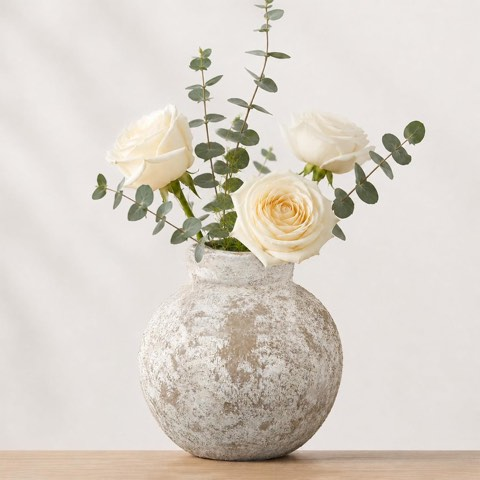
DOWAN 5.7'' Rustic Vintage Ceramic Vase for Home Decor, Distressed Textured Decorative Accent, Minimalist Farmhouse Pottery Neutral Flower Vase for Living Room, Shelf, Mantel & Entryway, Gray
Shop on Amazon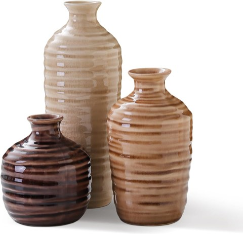
Ceramic Vase Set of 3, Small Vintage Flower Vase Bud Vases for Home Decor, Glossy Neutral Farmhouse Decorative Vases for Living Room, Bathroom, Kitchen, Bookshelf, Coffee Table, Mantel, Office
Shop on AmazonThe Best Kitchen Counter Decor Uses What You Already Own
Before buying anything, walk around your own home first.
You might already have a ceramic vase in the living room, a wooden tray in the dining room, or a stack of cookbooks sitting somewhere forgotten.
Move those pieces into the kitchen and experiment with them there.
I often find that rearranging existing pieces creates a bigger improvement than buying new decor ever does. You might discover that the bowl you thought looked ordinary suddenly looks fantastic against your backsplash.
That little experiment can save money and help you understand what your kitchen actually needs before you spend a cent.
How Do You Make Small Kitchen Counters Look Better?
Small kitchens need a slightly different strategy.
Instead of spreading decor across the entire counter, create one or two intentional zones instead.
A small tray can organize your everyday oils. A compact vase can occupy one corner. A wooden board can lean vertically against the backsplash rather than sitting flat.
Use vertical space wherever possible. Leaning boards, hanging utensils, wall shelves, and open shelving all give you the decorative effect without consuming valuable workspace.
And remember, a small counter doesn't need to look empty to look spacious. It needs to look organized.
What Kitchen Counter Decor Should You Avoid?
Not everything deserves a place on the counter.
Avoid filling every empty inch with decorative objects. Too many tiny accessories create visual noise and make cleaning harder than it needs to be.
I'd also avoid keeping appliances on display that you rarely use. A blender that comes out twice a month doesn't need a permanent address on the counter.
Most importantly, don't copy a kitchen setup that doesn't match how you actually live.
An appliance garage is really just a way to edit what you see while keeping the working kitchen fully functional underneath. That same idea applies to countertop styling in general. You don't need to hide your life. You simply need to edit the visual noise around it.
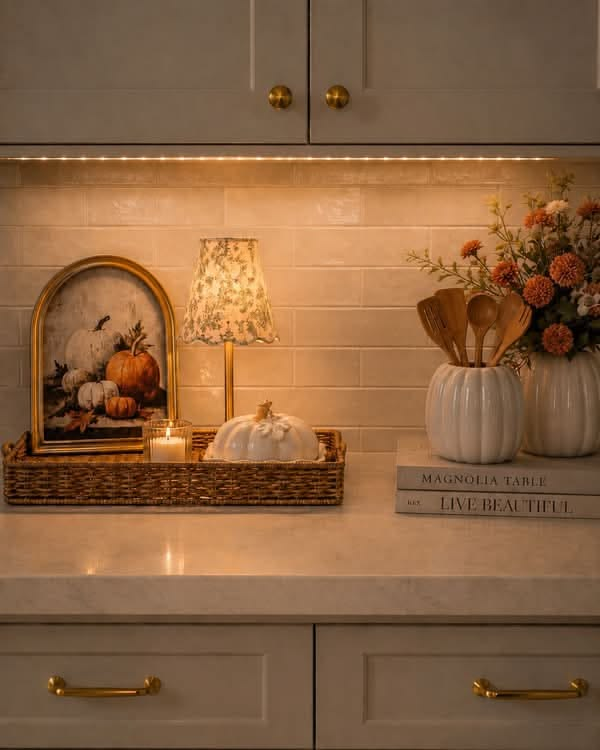
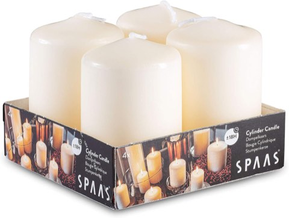
SPAAS Ivory Pillar Candles - 4 Pack | 2x3” Small Pillar Candles for Lantern Home Décor, Kitchen Decoration, Fireplace, Wedding Aesthetic, Centerpiece | Non Scented Decorative Pillar Candles
Shop on AmazonHow Do You Keep Kitchen Counter Decor Practical?
Beautiful counters still need to function. Otherwise you'll eventually get annoyed with your own decor, no matter how good it looks.
Keep your most-used items close to where you need them. Store occasional-use appliances elsewhere. Leave your primary preparation area clear whenever possible.
General kitchen design guidance suggests keeping a continuous prep area of at least 36 inches wide and 24 inches deep next to the sink for a primary work zone.
That guideline highlights something worth remembering: decor should never steal your main workspace.
If you have a small kitchen, prioritize function even more. Choose one decorative focal point instead of trying to recreate a giant Pinterest kitchen on a six-foot counter.
18 Kitchen Counter Decor Ideas Worth Trying
1. Create a Layered Kitchen Counter Vignette
If you want one of the most polished looks on this whole list, combine several of the techniques below into one intentional arrangement.
Try layering a large wooden cutting board leaning against the backsplash, a small ceramic vase with greenery, a low stone bowl, and a wooden or marble tray holding olive oil and salt.
Notice how every piece has a different height, shape, and texture.
That variety keeps the arrangement interesting without making it chaotic.
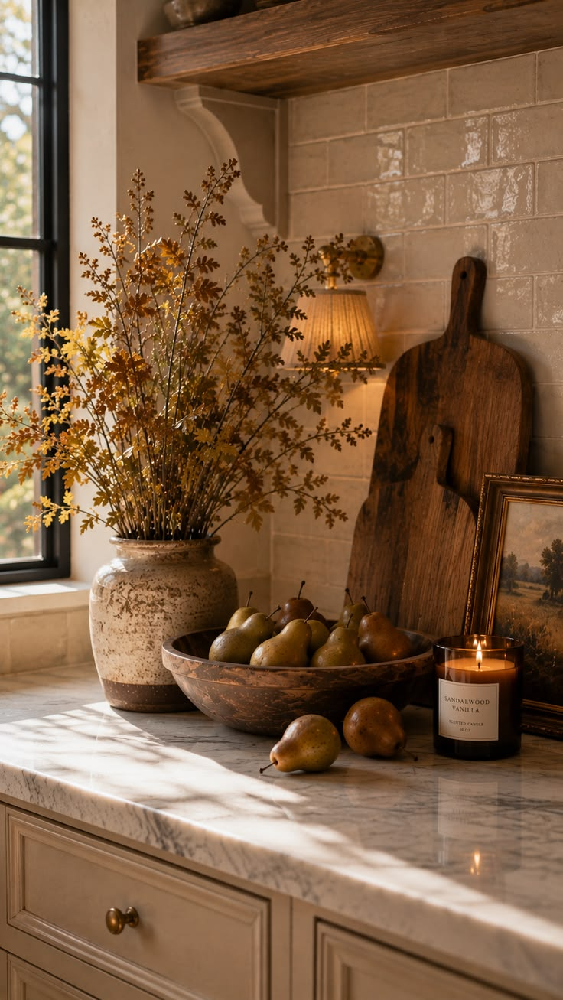
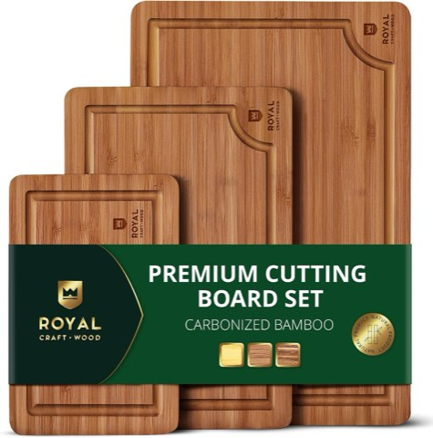
ROYAL CRAFT WOOD Wooden Cutting Boards for Kitchen Appliances - Non Toxic Bamboo Wood Cutting Board Set with Deep Juice Groove, Side Handles, Charcuterie & Butcher Block for Meat, Meal Prep & Serving
Shop on Amazon2. Add a Small Decorative Candle
A candle can make a kitchen feel surprisingly cozy, especially during evening meals or when guests come over unannounced.
Choose a subtle scent and a container that complements your kitchen's existing palette.
Place it away from cooking areas, flammable materials, and high-traffic spots. Safety matters more than aesthetics here.
Pair a candle with a small bowl or vase to create a simple countertop vignette on its own.
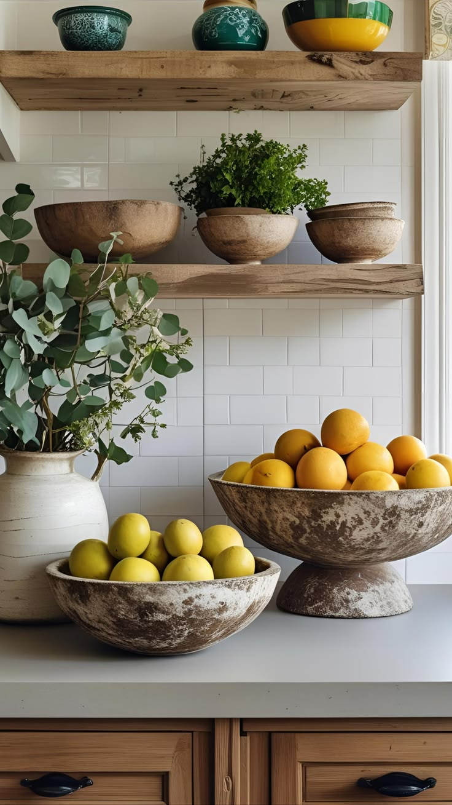
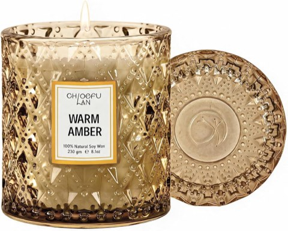
Chloefu LAN Amber Candles, Luxury Candle for Home Scented, Long Burning Time, Holiday Gifts, All Natural Soy Wax Decorative Candles, Scented Candle Gifts for Men&Women, 8.1oz
Shop on Amazon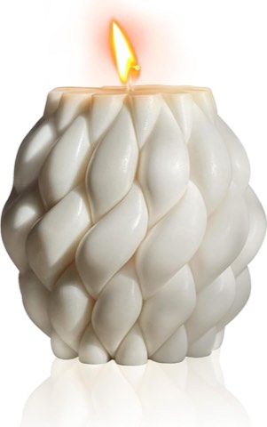
Knot Ball Candle Handmade Pillar Scented Decorative Candle,White Medium
Shop on Amazon3. Display Pretty Everyday Appliances
Not every appliance needs to disappear into a cabinet.
If you use your espresso machine every morning, keeping it accessible makes sense. The same goes for an attractive stand mixer, kettle, or coffee maker you reach for daily.
The trick is choosing which appliances actually deserve counter space.
A good personal rule is keeping appliances out only when they get used every day, and storing the rest away out of sight.
That rule makes sense because counter space has real value. Don't sacrifice your prep area for an appliance you use twice a month.
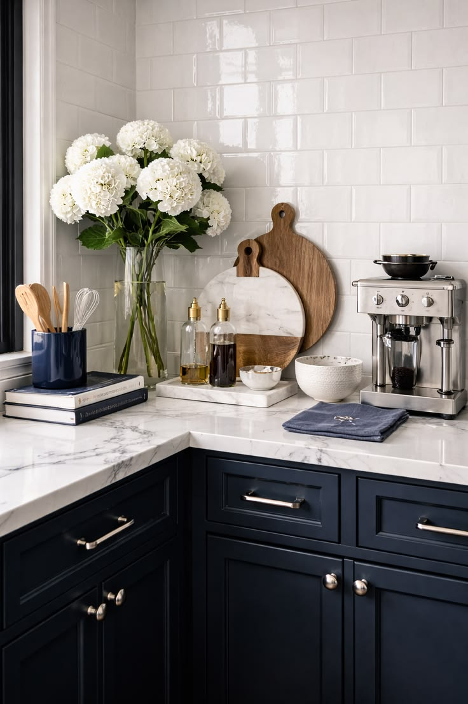
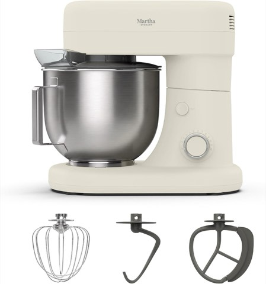
Martha Stewart 5.3QT Tilt Head Stand Mixer, 12 Speeds, Stainless Steel Bowl
Shop on Amazon4. Add Fresh Flowers
Nothing changes the mood of a kitchen faster than fresh flowers.
You don't need a giant bouquet. A small arrangement in a simple vase can bring color and softness to the room on its own.
Seasonal flowers work especially well, since you can change the colors throughout the year without much effort.
For everyday styling, I prefer loose arrangements over perfectly symmetrical bouquets. They feel more relaxed and natural sitting on a counter.
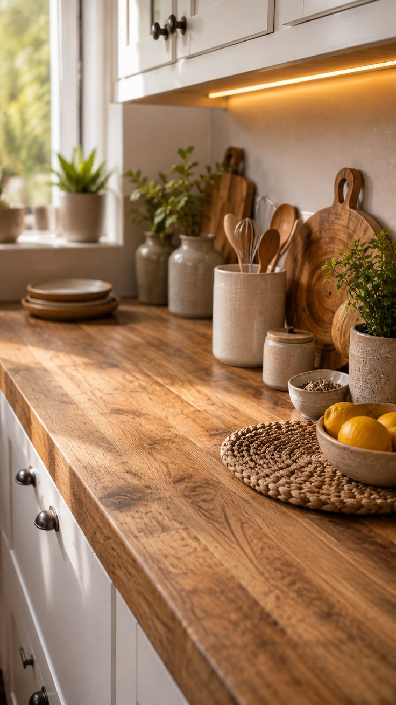
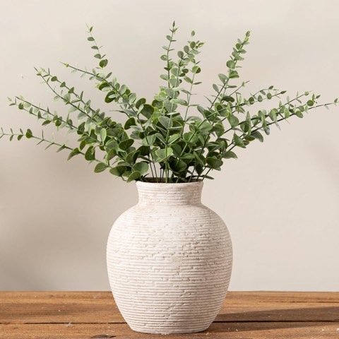
Vanselia Ceramic Flower Vase Home Decor - Small Farmhouse Table Vases Rustic Vintage Living Room Kitchen Bedroom Decorations for House Book Shelf Office Coffee Desk Dining Fireplace (6.3" Rustic)
Shop on Amazon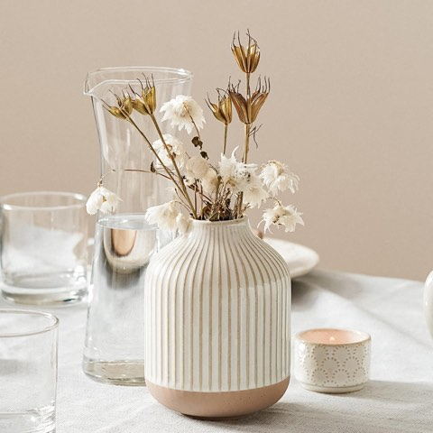
Boho Farmhouse Small Ceramic Vase for Pampas Grass & Flowers - 5.3 Inch Rustic White Vase, Centerpiece for Eucalyptus, Tiny Stems & Bouquets with Embossed Lines
Shop on Amazon5. Use a Marble or Stone Tray
A stone tray can make even everyday kitchen essentials look more intentional than they otherwise would.
Use one to hold olive oil bottles, salt grinders, candles, or a small vase.
I particularly like marble against warm wood, since the two materials create an interesting contrast against each other.
Just remember that natural stone requires appropriate care. Some stones can stain or react to acidic substances, so check the material before using it as a permanent surface for oils and food.
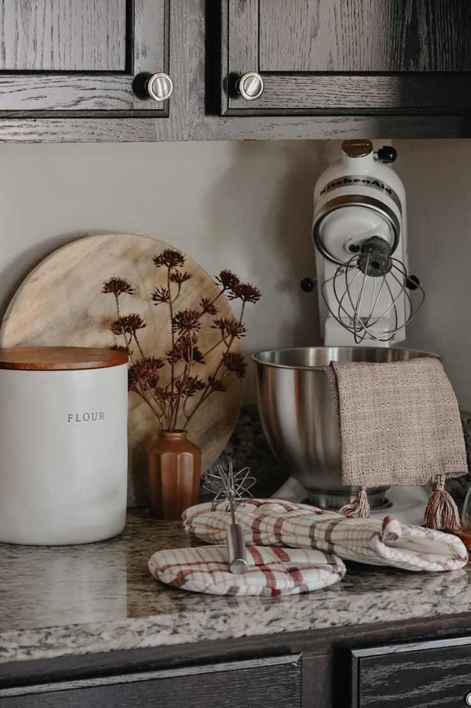
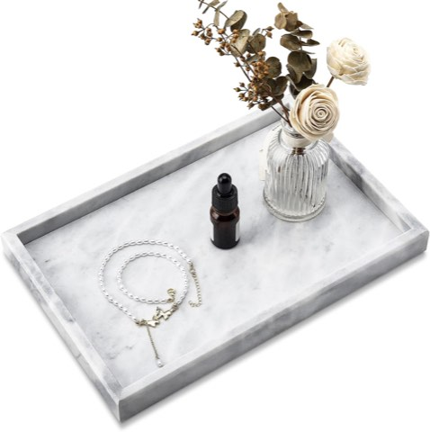
Real Natural Marble Tray for Bathroom, Vanity, Kitchen Counter & Desktop
Shop on Amazon
Marble Bathroom Tray for Countertop & Home Decor, Natural Decorative Marble Tray for Jewelry & Perfume Organizer, Luxury Stone Vanity Trays for Dresser, Kitchen Counter, 12" x 8", Gray Black
Shop on Amazon6. Create a Mini Baking Station
Love baking? Make your favorite activity part of the kitchen's actual design instead of hiding it away.
Keep a few attractive baking ingredients in coordinated containers. Add a wooden rolling pin, a ceramic mixing bowl, or a favorite cookbook nearby.
You don't need to display every baking tool you own. Choose the pieces that look good and that you actually use regularly.
This approach makes the counter feel personal while still keeping the styling practical.
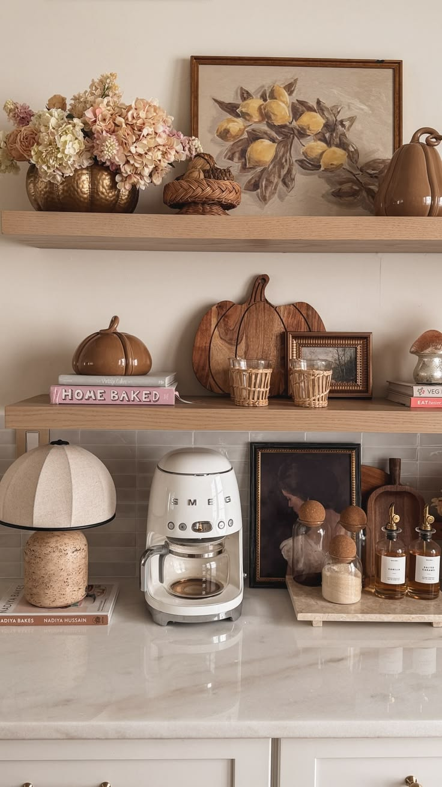
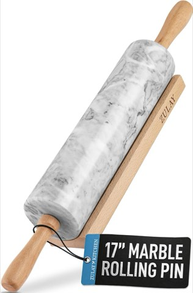
Zulay Kitchen 17-Inch Marble Rolling Pin With Stand - Polished Marble Rolling Pins For Baking With Long Beechwood Handle - Non-stick Roller Pin For Baking Pastries, Bread & Pizza
Shop on Amazon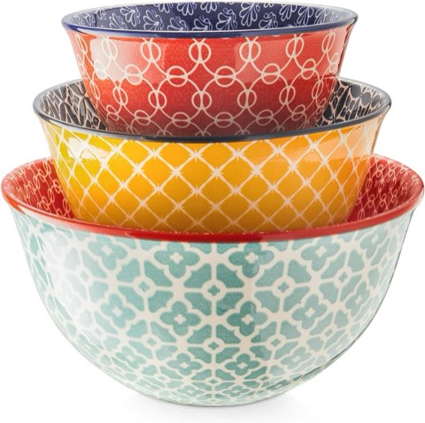
DOWAN Mixing Bowls, Ceramic Mixing Bowls for Kitchen, Colorful Vibrant Nesting Bowls for Cooking, Baking, Prepping, Serving, Salad, Housewarming Gift, Microwave Dishwasher Safe, 3.7/2/1 Qt, Set of 3
Shop on Amazon7. Add a Statement Vase
Sometimes a kitchen needs one large decorative moment instead of lots of small ones scattered around.
A sculptural vase can fill an awkward corner and create a strong focal point. Choose a shape that contrasts with the straight lines of cabinets and countertops.
Fill it with branches, eucalyptus, dried stems, or seasonal flowers depending on the time of year.
If your kitchen already contains plenty of pattern, choose a simple vase. If the room feels plain, use the vase to introduce shape or texture instead.
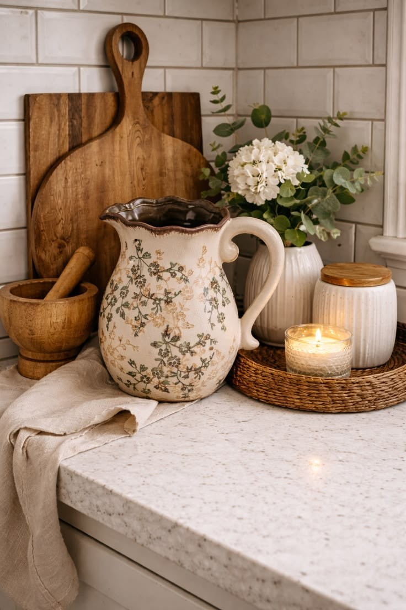
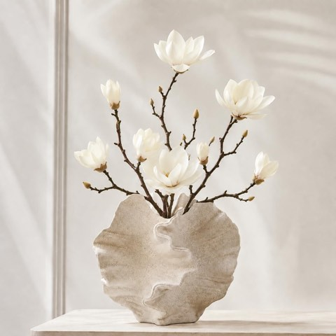
Ceramic Vase, Modern Sculptural Textured Vase, Beige Abstract Flower Vase for Home Decor, Living Room, Coffee Table, Shelf, Office, Centerpiece
Shop on Amazon8. Display Handmade Ceramic Bowls
Handmade ceramics add character because they rarely look perfectly identical to one another.
Place one beautiful bowl near the edge of the counter, or use a pair of complementary bowls to hold fruit, garlic, or small kitchen essentials.
I particularly like imperfect ceramics in neutral kitchens, since they keep the room from looking too polished or showroom-flat.
A pair of handmade ceramic bowls works especially well as part of a larger curated countertop arrangement, not just as standalone pieces.
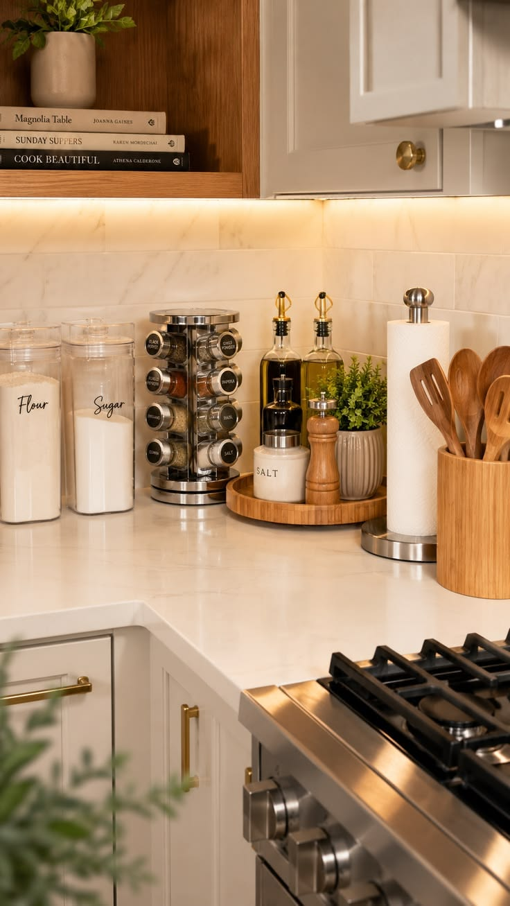

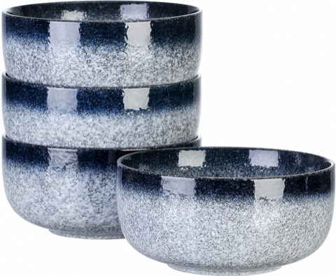
S&Q'S CERAMICS Cereal Bowls - 36 Ounce, Japanese Noodle Bowl Set, Ceramic Bowls for Kitchen, Breakfast, Oatmeal, Microwave and Dishwasher Safe, [Set of 4], Dark Blue
Shop on Amazon9. Add a Small Kitchen Counter Lamp
This idea might sound unexpected, but it can completely transform a kitchen once the sun goes down.
A small table lamp on the counter creates a softer layer of lighting than overhead fixtures ever provide. It also gives the kitchen a more residential, cozy feeling overall.
Using a lamp in the kitchen is an unexpectedly effective way to introduce secondary lighting, the concentrated, charming glow a small lamp creates is something no overhead fixture can really replicate.
Choose a compact lamp that fits safely away from water and cooking splashes. A ceramic, stone, or vintage-style base can add personality without overwhelming the space around it.
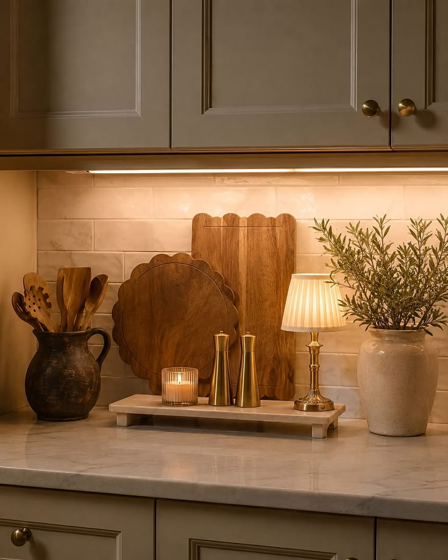
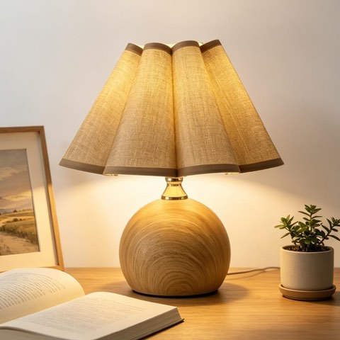
Small Vintage Lamp Mini Cute Table Lamps for Kitchen Counter Nightstand
Shop on Amazon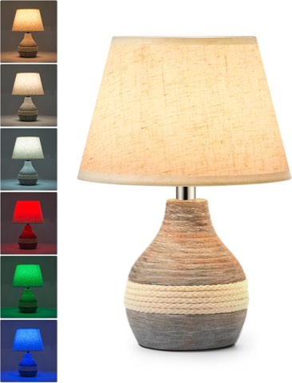
UMEXUS 10" Small Ceramic Cordless Table Lamp, Rechargeable Battery, Coastal
Shop on Amazon10. Lean Wooden Boards Against the Backsplash
Here's a simple trick worth stealing: lean your cutting boards instead of hiding them away in a drawer.
Place two or three boards of different sizes against the backsplash. Vary the shapes slightly so the arrangement feels relaxed rather than staged.
Wood instantly adds warmth, especially if your kitchen features white cabinets or cool stone surfaces.
You can also mix a wooden board with a marble serving board for contrast between the two materials.
The key is keeping the arrangement simple. You want texture, not a cutting-board museum.
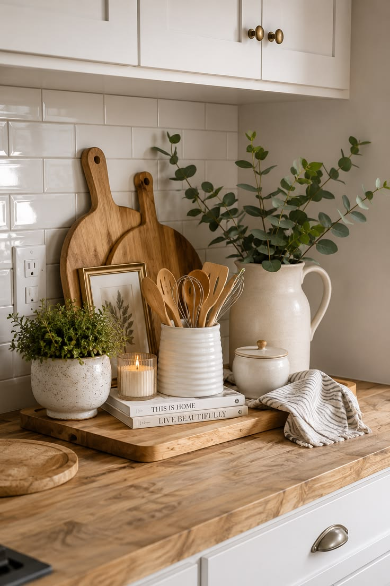
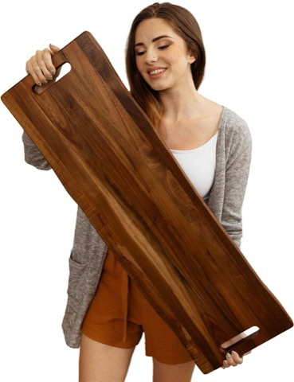
Large Acacia Serving Board with Handles, 36 x 12 Inch Rectangular Charcuterie Platter, Natural Wood Server for Meat, Cheese Board, and Party Appetizers, Extra Long 3ft
Shop on Amazon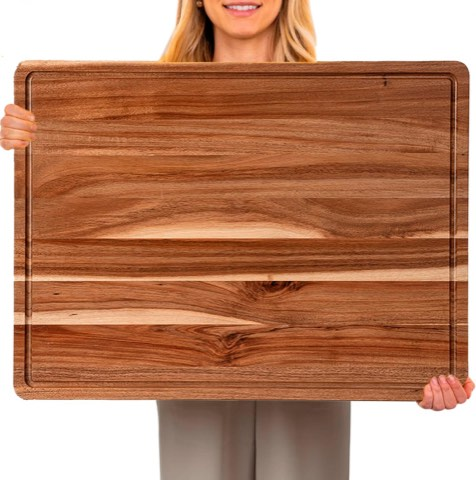
GAOMON 24 x 18 In Acacia Cutting Boardfor Kitchen, XXL Extra Large Charcuterie Cheese Platter Serving Tray, Food Prep and Serving Boards, Chopping Boards for Meal Vegetables and Cheese
Shop on Amazon11. Use Decorative Canisters
Canisters offer one of the easiest ways to combine decor with actual storage.
Use them for coffee, tea, flour, sugar, cookies, or other ingredients you reach for regularly.
Ceramic canisters work beautifully in classic kitchens, glass works well for minimalist spaces, and wood canisters bring warmth to more contemporary rooms.
Try to keep the set cohesive. Three matching or complementary canisters usually look more polished than a collection of completely unrelated containers thrown together.
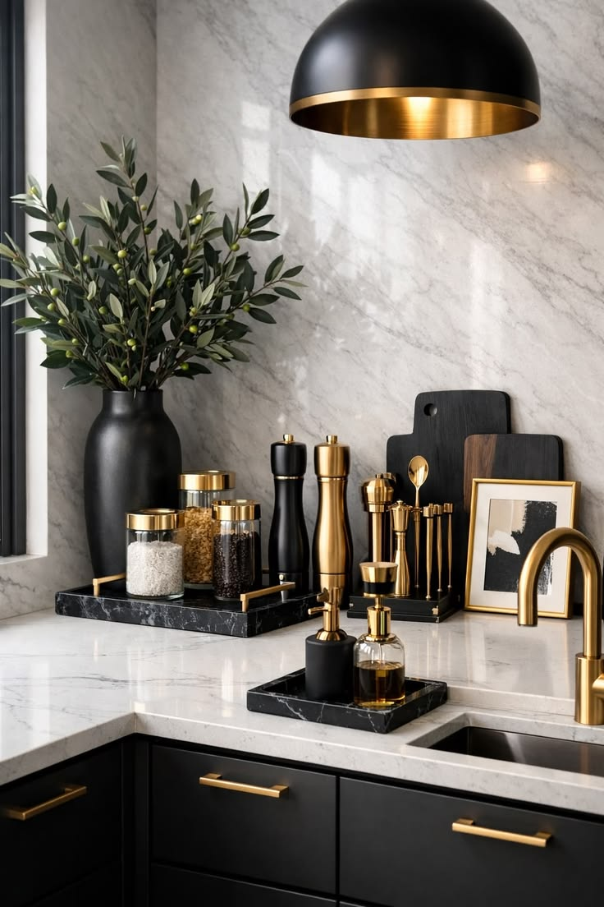

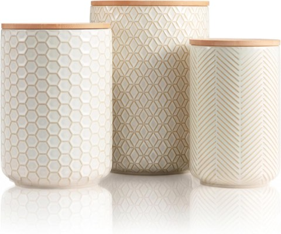
Kook Ceramic Storage Containers, Embossed, Bamboo Lids, Set of 3, Ivory
Shop on Amazon12. Create a Cozy Coffee Station
If coffee controls the rhythm of your mornings, give it its own little zone instead of letting it spread across the whole counter.
Keep your coffee maker, mugs, coffee canister, and sugar container together rather than scattering them across the counter.
A wooden tray can visually define the area. Add one small plant or framed print nearby if there's enough room for it.
If your kitchen has limited counter space, keep only the coffee maker and one or two essentials visible. Everything else can live in a cabinet nearby.
Dedicated appliance zones like this keep frequently used equipment accessible without letting the whole counter turn into an appliance showroom.
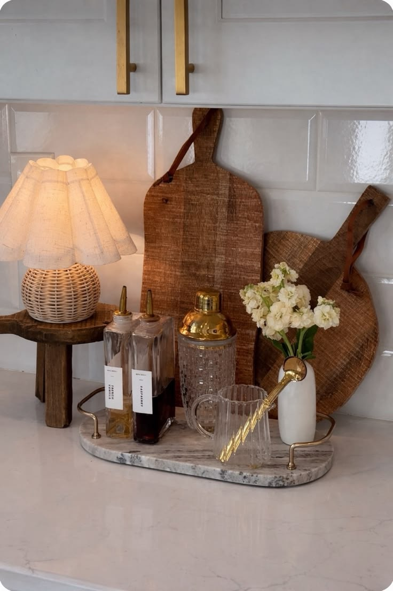
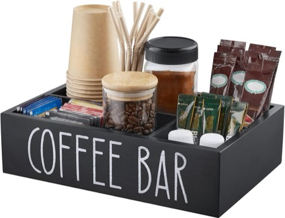
ALELION Coffee Station Organizer - Wood Countertop Accessories Organizer with Removable Dividers for Pods Condiment Syrup Tea Cups Stirrers - for Farmhouse Coffee Bar Decor
Shop on Amazon13. Add a Stylish Utensil Holder
Your wooden spoons and cooking utensils probably already sit somewhere on the counter. Why not make that storage attractive while it's there?
Choose a large ceramic crock, vintage container, stoneware vase, or wooden utensil holder instead of whatever came with the set.
I prefer slightly oversized holders, since they make the utensils look intentional rather than cramped. Keep the colors coordinated with your cabinets or backsplash for a cohesive look overall.
This idea works particularly well in farmhouse, cottage, traditional, and organic modern kitchens especially.
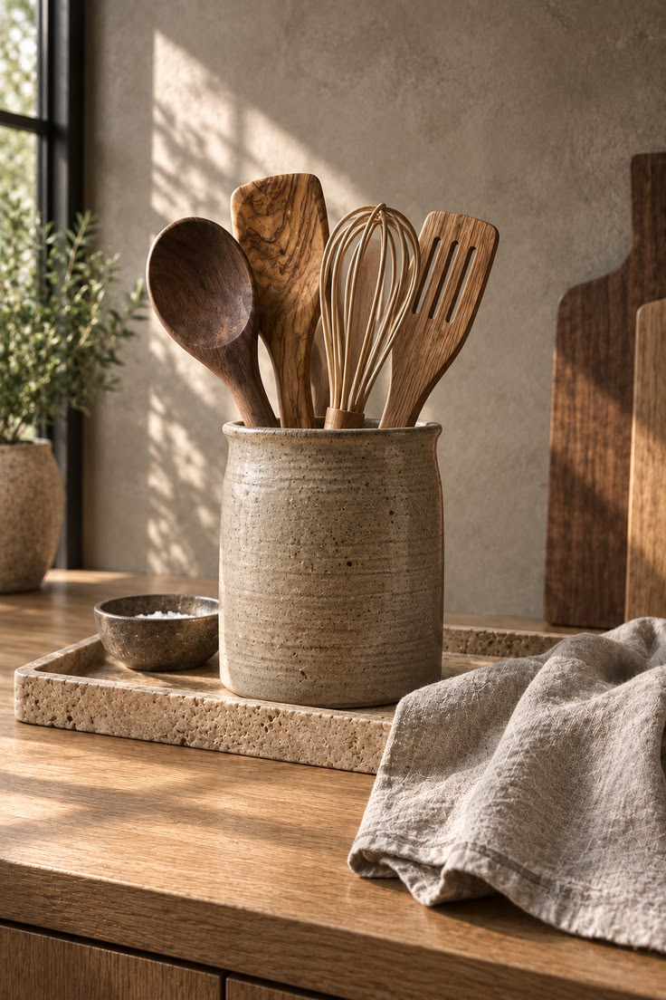
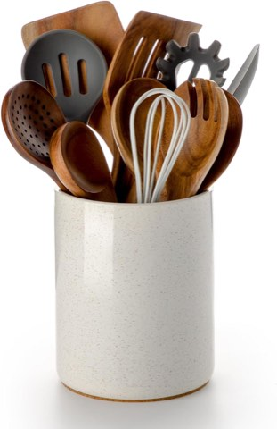
Nucookery Ceramic Kitchen Utensil Holder for Countertop Organizer 6.4" Sand
Shop on Amazon14. Display Your Favorite Cookbooks
Your cookbooks can become part of the counter decor instead of disappearing inside a cabinet where nobody sees them.
Stack two or three attractive books horizontally and place a small bowl or decorative object on top. Alternatively, lean one book against the backsplash and place a vase beside it.
Choose books with covers that complement your kitchen colors. Neutral covers work especially well if you already have plenty of visual activity elsewhere in the room.
Just don't create a tower of twelve cookbooks. Unless you actually use all twelve, you're decorating with homework.
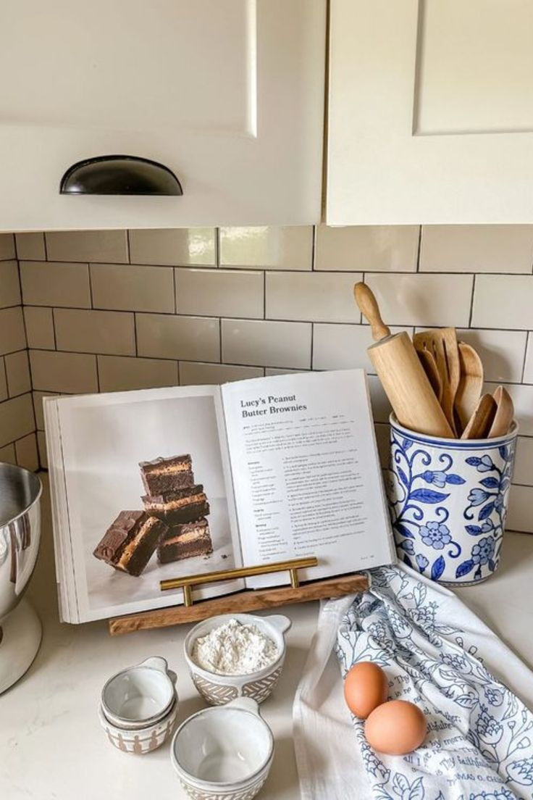
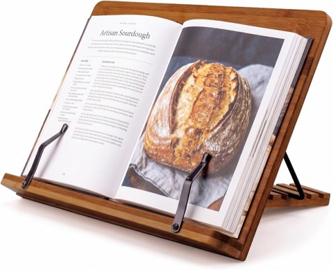
Bamboo Cookbook Stand Large, Adjustable Book Holder Tray and Page Paper Clips - Walnut Color Large - 4-Position Recipe Book Stand Holds Thick Books for Kitchen Counter, Reading, Studying - Foldable
Shop on Amazon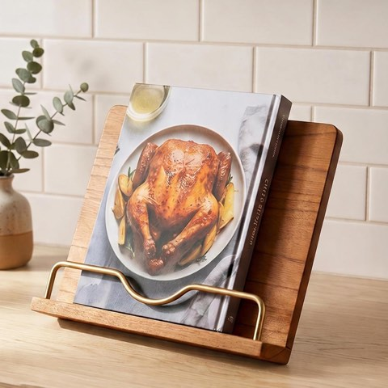
Cookbook Stand Holder for Kitchen Counter Decor - Wooden Recipe Book Holder
Shop on Amazon15. Bring in a Small Vase of Greenery
A little greenery can soften an otherwise hard-looking kitchen full of stone and cabinetry.
You don't need a giant arrangement. A small ceramic vase with eucalyptus, olive branches, herbs, or seasonal greenery can completely change the mood of the room.
If you cook regularly, fresh herbs offer an even better option. Basil, rosemary, mint, and thyme look beautiful and actually serve a purpose beyond decoration.
For kitchens with lots of stone, metal, and cabinetry, greenery introduces an organic element that makes the whole space feel warmer.
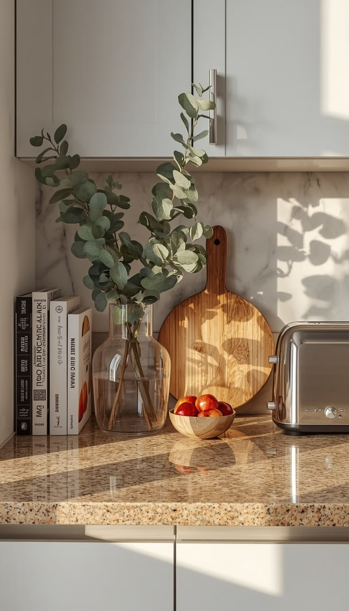
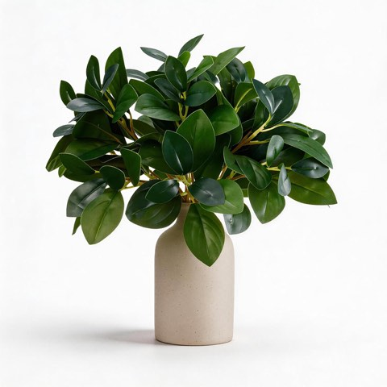
12" Artificial Plant Indoor Small Fake Plants Eucalyptus Stems With Vase
Shop on Amazon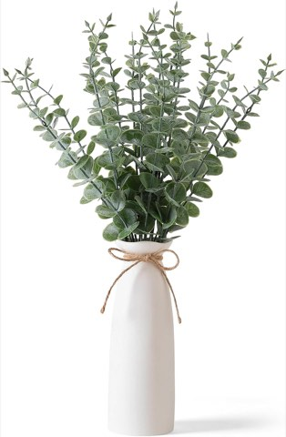
Vase with Greenery, 20pcs Artificial EucalyptusStems in White Vase, Boho Home Decor Plant, 19" Decorative Fake Plants for Home Farmhouse Mantle Centerpiece Decor
Shop on Amazon16. Create a Beautiful Oil and Seasoning Tray
If your olive oil, salt, pepper, and vinegar already live on the counter, give them a proper home instead of leaving them scattered.
Place them on a small decorative tray near the cooking area. Suddenly, the collection looks intentional instead of random.
A wooden tray creates warmth, while marble adds a more polished look. Brass or metal trays can work beautifully in traditional or vintage-inspired kitchens too.
Trays get recommended constantly for exactly this reason, they organize frequently used items while also protecting countertops from oil drips and rings.
That's the kind of decor I can get behind. Pretty and useful? Yes, please.
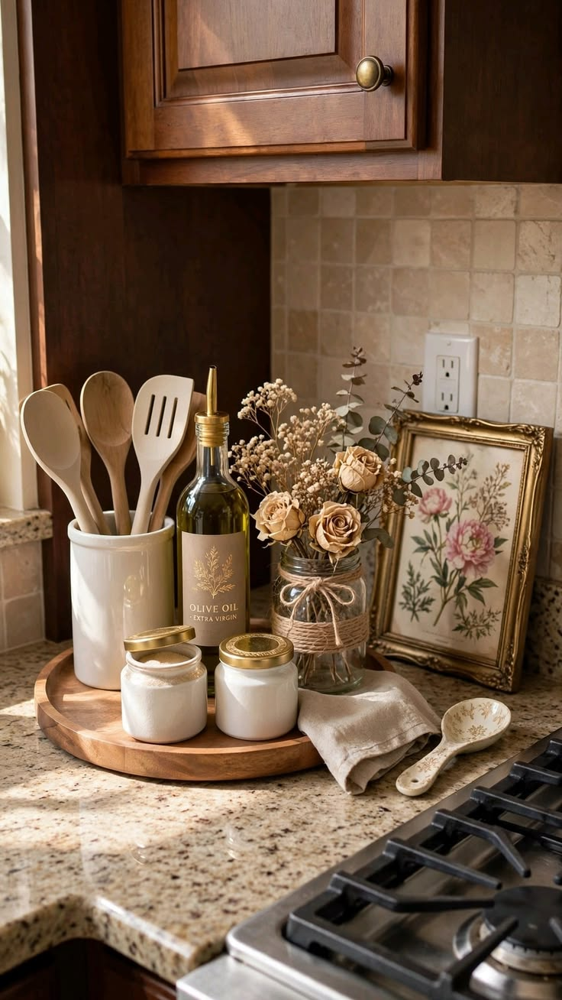
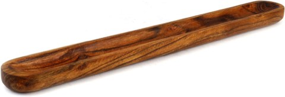
Kaizen Casa Hand-Carved Acacia Wood Long Olive Tray Canoe Style Perfect for Dinner Rolls, or as a Table Centerpiece
Shop on Amazon17. Style a Ceramic Fruit Bowl
A fruit bowl sounds basic, but the right one can become the centerpiece of the whole counter.
Choose a handmade ceramic bowl, stone bowl, wooden bowl, or sculptural piece. Then fill it with lemons, oranges, apples, or whatever fruit you actually eat.
I prefer real fruit, since it adds color and makes the kitchen feel alive. Plus, you get a decoration that encourages you to eat the fruit instead of discovering it three weeks later in the refrigerator.
For a neutral kitchen, try a cream or earthy ceramic bowl. For more contrast, choose black, terracotta, or dark wood instead.
11" Ceramic Fruit Bowl for Kitchen Counter, White
Shop on Amazon10" Large Ceramic Fruit Bowl for Kitchen Counter & Dining Room Table
Shop on Amazon18. Add a Large Wooden Cutting Board
A large wooden cutting board ranks near the top of my favorite ideas on this whole list, because it does two jobs at once.
You can actually use it for chopping, serving bread, or prepping food. When you finish cooking, lean it against the backsplash and let it become part of the decor instead of hiding in a drawer.
Choose a board with an interesting grain or a slightly irregular shape. A thick wood board instantly adds warmth to white, cream, gray, or black kitchens.
You can even layer two boards of different sizes for extra texture, if there's room for both.
Acacia Wood Cutting Board and Chopping Board with Handle for Meat, Cheese Board, Vegetables, Bread, and Charcuterie - Decorative Wooden Serving Board for Kitchen and Dining Room, Large 17" x 13"
Shop on AmazonZeQi Acacia Wood Cutting Board with Handle 13.7''X7'', Charcuterie Board, Serving Board for Cheese, Bread, Meat, Vegetables & Fruits, Natural Wooden Chopping Board for Kitchen
Shop on AmazonHow Can You Make Kitchen Counters Look Expensive?
You don't necessarily need expensive decor. You need materials that look substantial and intentional.
Wood, stone, ceramic, glass, linen, and metal can instantly add visual depth. Even inexpensive accessories can look elevated once you combine natural textures and keep the color palette controlled throughout.
I especially like mixing warm wood with creamy ceramics. That combination gives a kitchen a relaxed, expensive-looking feel without making it feel overly decorated.
The advice that sticks with me most is to take a thoughtful, curated approach where every single detail relates back to the kitchen as a whole.
So before buying another decorative object, ask yourself: does this actually work with the rest of my kitchen?
What Is the Rule of Three for Kitchen Counter Decor?
If you've ever styled a shelf and wondered why something still feels slightly off, the rule of three might solve the problem.
Try grouping three objects with different heights or shapes. For example, place a tall vase beside a medium-sized ceramic container and a low wooden bowl.
The trick works because the different heights create movement. Instead of looking like three objects you randomly dropped on the counter, they create a small composition together.
Odd-numbered groupings create a sense of rhythm and balance that even-numbered ones just don't quite manage on their own.
You don't need to follow this rule religiously, though. Your kitchen isn't taking a design exam. If two objects look fantastic together, keep them together.
Handmade Ceramic Small Bowls Set of 6 | 2.5 Oz Mexican Dipping Sauce Charcuterie Bowls | Talavera Pottery | Multi-Color
Shop on Amazon26 OZ Ceramic Soup Bowls Set of 6, Stoneware Cereal Bowl for Kitchen
Shop on AmazonHow Do You Decorate a Kitchen Counter Without Making It Look Cluttered?
The secret doesn't involve removing everything. Instead, you need to create visual breathing room between what stays.
Start by choosing a few larger pieces rather than covering the counter with lots of tiny decorations. A large wooden board, a ceramic bowl, and a vase usually create more impact than ten little objects scattered everywhere.
I also like grouping items together. A tray can hold your olive oil, salt, pepper, and favorite vinegar. A small corner can hold a vase, a cookbook, and a decorative bowl. The rest of the counter stays open for actual cooking.
Why does this work? Your eye sees each group as one visual unit instead of processing every individual object on its own.
A common styling trick is placing objects together and keeping them close to the backsplash, so most of the countertop stays genuinely usable for prep work.
Ceramic Bowls Set of 6, 5 inch Deep Cereal Bowl for Kitchen, Handmade Soup Bowls Porcelain Dinner Bowl Eating Salad, Pasta, Dessert, Oatmeal, Ice Cream, Milk, Microwave ＆ Dishwasher Safe (3 colors)
Shop on AmazonAmorArc Ceramic Cereal Bowls Set of 6, 24 oz Handmade Stoneware Bowls Set for Cereal Soup Salad, Stylish Kitchen bowls for Meal, Dishwasher & Microwave Safe, Reactive Glaze
Shop on AmazonWhat Should You Put on a Kitchen Counter?
Before you start buying pretty bowls and vases, think about what you actually use every day. The best kitchen counter decor combines practical items with decorative pieces.
Think about a beautiful fruit bowl, a wooden cutting board, a small vase with greenery, decorative canisters, a tray for oils and seasonings, a cookbook or two, a stylish utensil holder, a small lamp, a coffee station, and a few handmade ceramics.
I like to start with the functional pieces first and then add decoration around them. That approach keeps the counter useful while still giving you room to play with texture, color, and personality.
The advice I keep coming back to is simple: keep only the essentials, and make sure those essentials are actually beautiful. Countertops do better curated than crowded.
And honestly, that rule saves you from one of the biggest kitchen styling mistakes out there: putting something on the counter simply because you have an empty spot to fill.
Ceramic Fruit Bowl,10.2" Decorative Bowl, Large Fruit Bowl for Kitchen Counter, Pedestal Bowl, Kitchen Counter Décor, Bread Candy Snacks Organizer(Magic Eye Blue)
Shop on AmazonHBlife 2 Tier Fruit Bowl, Ceramic Fruit Basket for Kitchen Counter
Shop on AmazonFinal Thoughts on Kitchen Counter Decor
The best kitchen counter decor doesn't make your kitchen look untouched. It makes the room feel intentional while still leaving plenty of space for real life.
Start with the things you genuinely use. Add natural materials such as wood, ceramic, stone, and greenery. Group smaller objects together, create visual height, and leave enough open counter space for actual cooking.
Most importantly, let your kitchen reflect you.
A beautiful fruit bowl, a favorite cookbook, a vintage vase, a handmade ceramic, or a little coffee station can tell people far more about your home than a counter covered with trendy accessories ever could.
So before you buy another decorative jar, look at your counter and ask yourself one simple question: does this make my kitchen more beautiful, more useful, or both?
If the answer is yes, keep it.
If the answer is no, congratulations. You've just found something else to put back in the cabinet.


hjn Farmhouse Pitcher Vase for Flowers- Ceramic Pitcher White Flower Vase for Your Kitchen/Home Decor/Office/Living Room/Bookshelf/Mantel/-White
Shop on Amazon